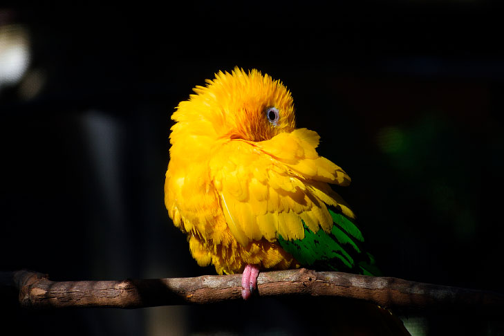

Animais em extinção no Brasil
Atualizado em: Existem mais de mil espécies em risco de extinção, segundo o Ministério do Meio Ambiente (MMA) e o Instituto Chico Mendes de Conservação da Biodiversidade (ICMBio). As causas para os desaparecimentos das espécies são por tráfico de animais, queimadas, desmatamento, construção de hidrelétricas, poluição e caça predatória, que afetam diretamente seu habitat, reduzindo suas chances de sobrevivência. Segundo estudos, o Brasil lidera o ranking com maior número de espécies de aves em extinção, com a Indonésia em segundo lugar.